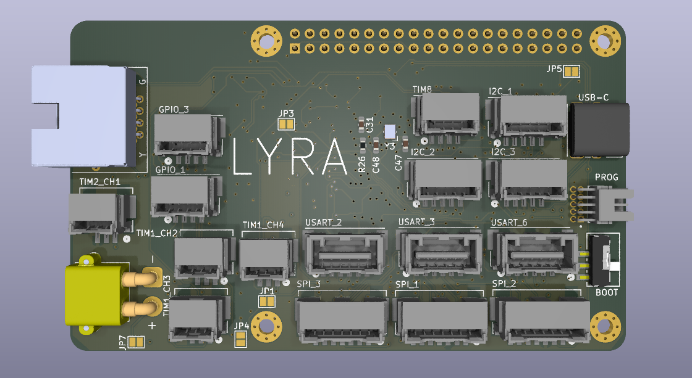
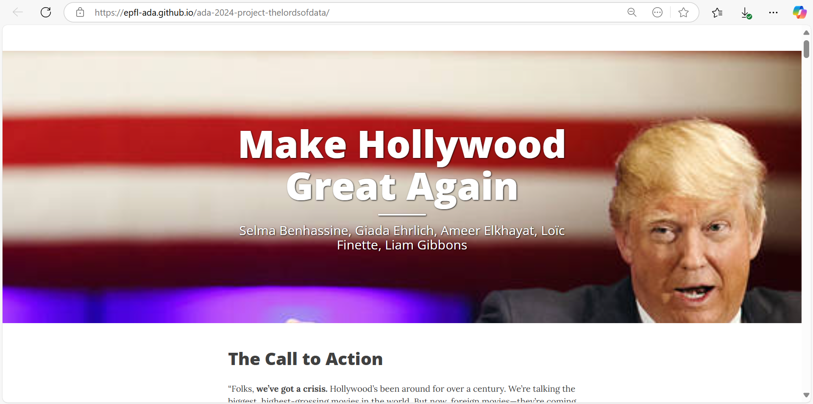
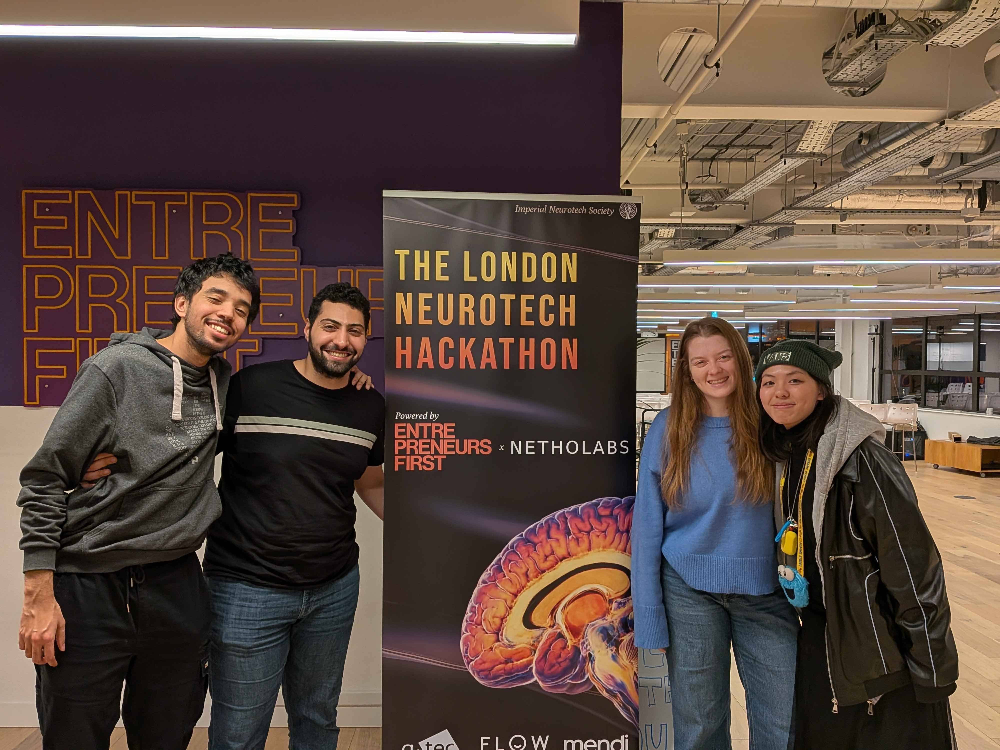
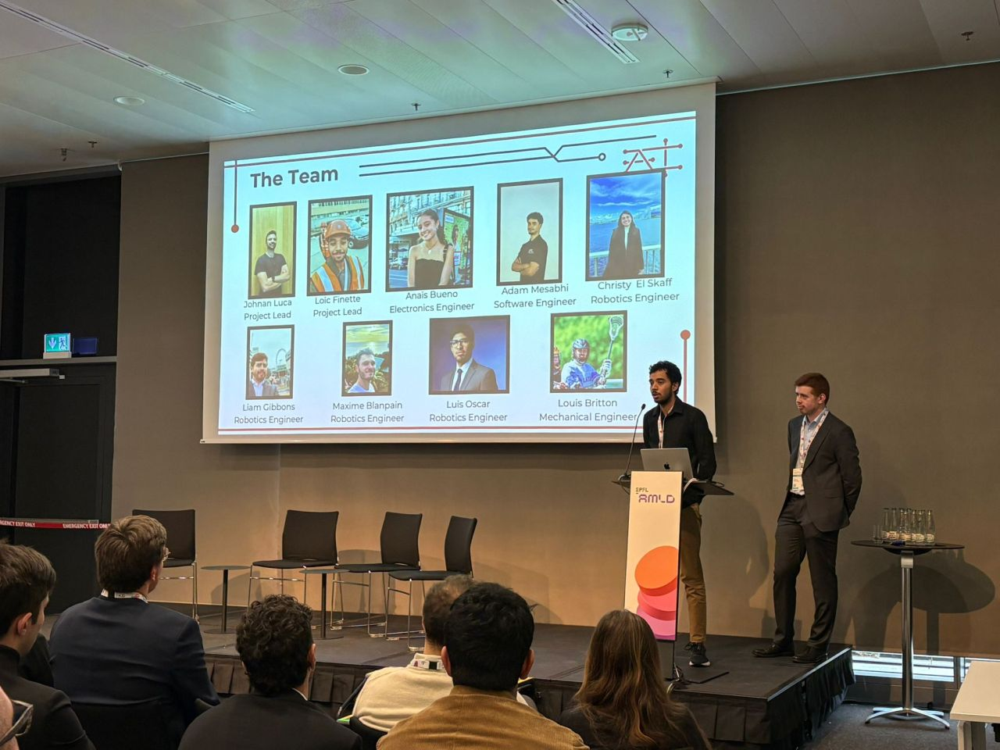
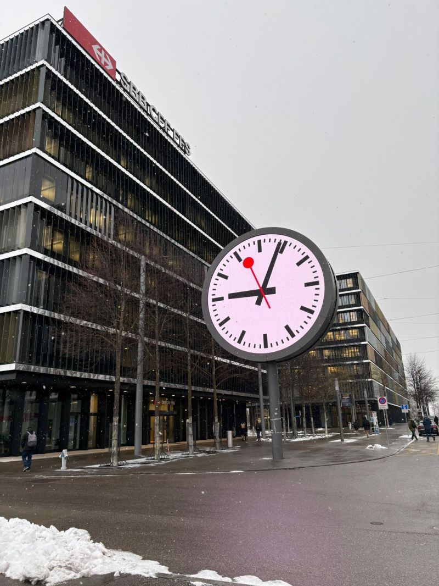
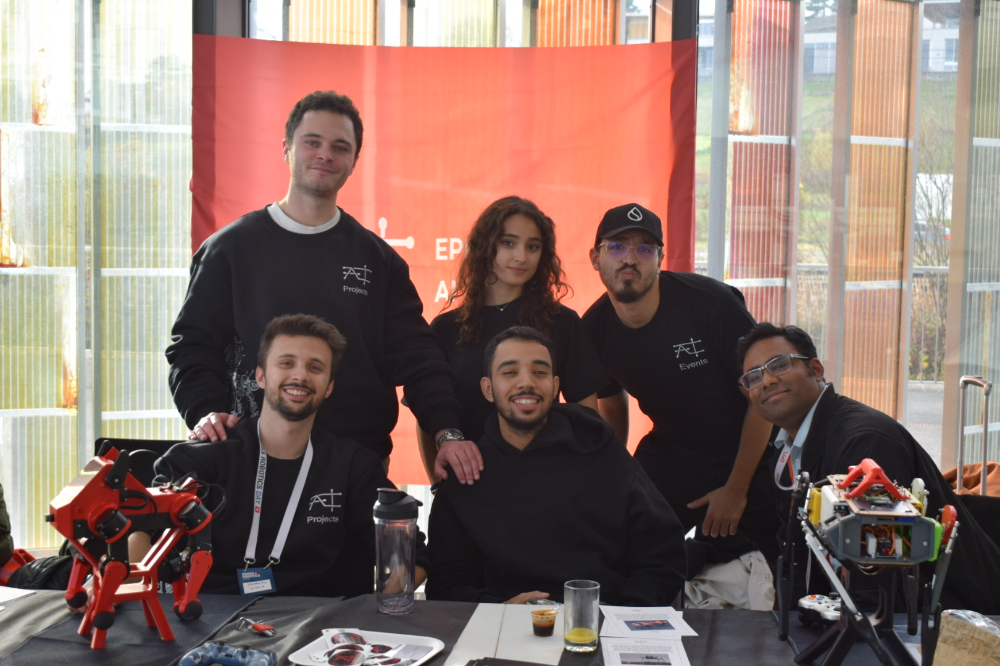
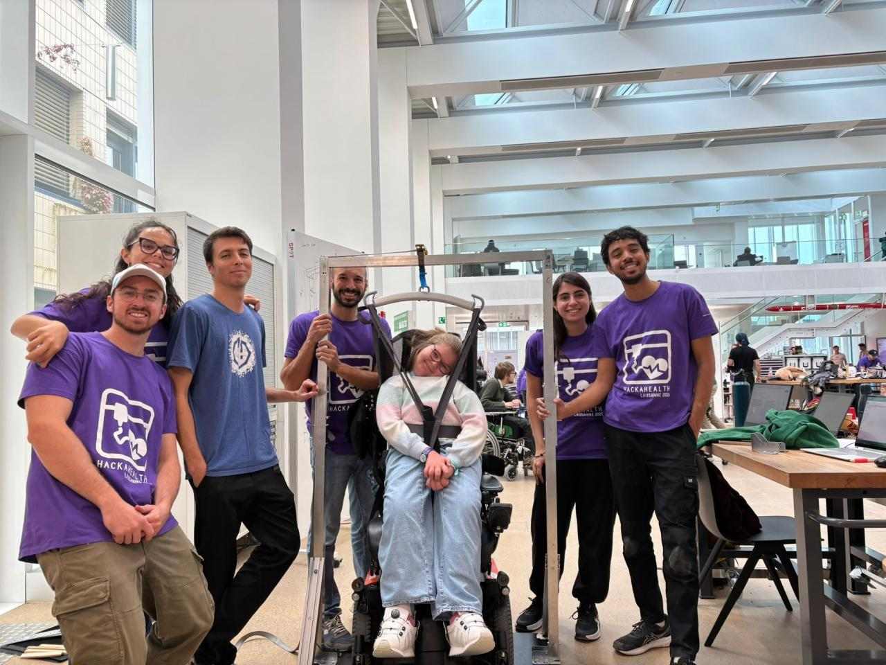
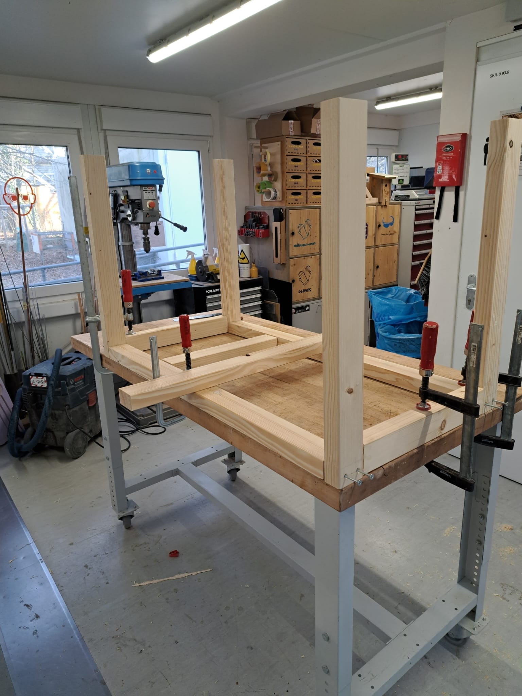
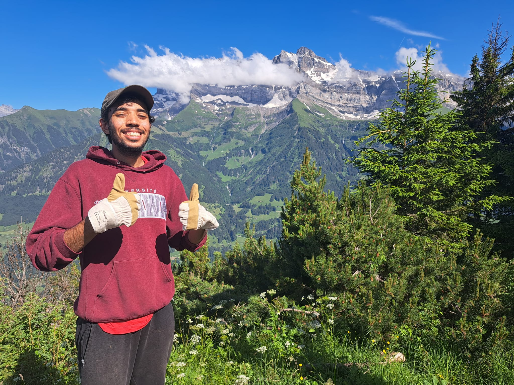

I am an EPFL Robotics Master's student with a minor in Computer Science. I have a passion for robotics systems and I enjoy tinkering with the intersection of hardware and firmware to understand how they function.
I am currently an Electronics Engineering Intern at Melexis, designing PCBs for wearable medical applications. On campus, I lead a team of 12 for the EPFL AI Team building an autonomous quadruped robot, and contribute to the avionics and sensor systems to Xplore's Mars rover for the European Rover Challenge.
In my free time, I enjoy woodworking and hiking.
I am actively looking for a first industry role in Robotics, Electronics, or ideally both.
Team lead for an autonomous quadruped robotics project. 12 students, 10K CHF budget, built Stanford's Pupper and DINGO, now designing a custom robot called Byte.
Autonomous robot that picks up and unloads Legos. Team of 3, 2250 CHF budget. Led electronics and firmware.

Redesigned the central Avionics PCB for a 60-person Mars rover team.
Mobile robot with IR sensors, built from scratch at EPFL's robotics makerspace.
Drone navigates a maze, lands on a pad, and returns to start. I designed the FSM. Team of 5.
VHDL interface for VGA and accelerometer on DE10-Lite. Now part of EPFL's Digital Logic curriculum.
Robot that navigates and re-localizes itself even when moved or camera-blocked.
Unity VR game with physical haptic controllers for Oculus Quest 2. Team of 4.

OLS regression analysis of domestic vs. foreign market splits for American films.

Built EEG-powered digital art at Imperial College. Brain signals control brush color and size in real time.

Presented the BARK quadruped robot project with the EPFL AI Team at AMLD.

Used AI to optimize SBB public transit network at Hack the Tracks in Bern.

Had a booth at SRD and showcased BARK quadruped robots (DINGO and Pupper) to researchers and industry.

Designed and built a structural lift to safely support a wheelchair user using aluminum framing.

I enjoy designing and building furniture from scratch. I have built a dining table, a tray, and a night stand for my apartment.

I spend as much time as I can outdoors. I enjoy multi-day hikes in the Alps and find that time in nature recharges me in a way nothing else does. I once volunteered to help a farmer for a week in the mountains.